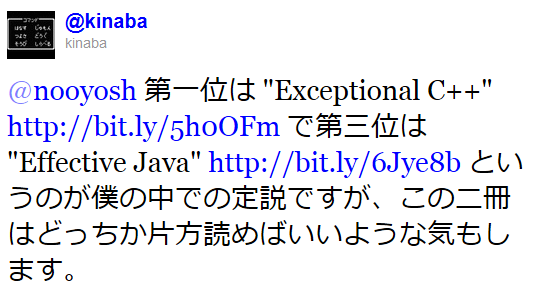
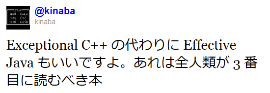
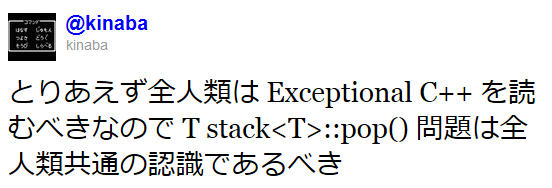

エラー処理を書いてはいけない
田中英行 tanaka.hideyuki@gmail.com
2011/12/08 @PFIセミナー
田中英行 tanaka.hideyuki@gmail.com
2011/12/08 @PFIセミナー
田中英行 (@tanakh, http://tanakh.jp)
エラー処理を抽象化しようというお話です
エラー処理を書かずにエラーを処理しろということなんだよ！！！
int foo(...)
{
int fd = open(...);
if (fd < 0) return -1;
int fe = open(...);
if (fe < 0) {
close(fd);
return -1;
}
int ff = open(...);
if (ff < 0) {
close(fe);
close(fd);
return -1;
}
...
}int foo()
{
int fd = 0, fe = 0, ff = 0;
fd = open(...);
if (fd < 0) goto finally;
fe = open(...);
if (fe < 0) goto finally;
ff = open(...);
if (ff < 0) goto finally;
...
finally:
if (fd > 0) close(fd);
if (fe > 0) close(fe);
if (ff > 0) close(ff);
return -1;
}parseCXX :: String -> Either ParseError Syntax
parseCXX = ...
foo str =
case parseCXX str of
Left err -> error $ show err
Right ast ->
case syntaxAnal ast of
Left err -> error $ show err
Right code ->
...int main(int argc, char *argv)
{
ifstream ifs(argv[1]);
vector<uint8_t> buf(100);
ifs.read(&buf, 100);
if (!ifs) {
// error is occured!!
...
}
return 0;
}初心者にはオススメしない… （例外が使えない環境での苦肉の策として用いられることが多いか）
例外が起こっても、プログラムの実行がおかしくならないという性質


（Exceptional C++ は例外のみを解説した本ではありませんが） 例外安全性についてきちんと述べられていて広く読まれている本
近代的プログラミング言語において、 例外がエラー通知手段としての事実上のデファクトになっている現代社会においては 例外安全性の理解が極めて重要
Exceptionalで読むまで全く気づきもしませんでした。

template <class F>
void foo(F f)
{
f();
}このようなものがJavaで書けるか？ （throwsに何を書けばいいのか）
例外からあまり進展が見られない
包括的に扱うツールは？
気を付けなければならないということは 必ずミスを犯すということ
デッドロックをジェノサイド -> STM
エラー処理にまつわるバグをジェノサイド -> ???
エラー生成 <-> 利用する関数 <-> エラー処理 これらを分離する
エラー生成関数を利用する関数もまたエラー生成関数へ。
任意のエラー生成関数に対してエラーを処理できるバックエンドを たった一回実装。
どれをつかってもいいんです。 モナドのフレームワークを使えば。
異なるエラー型ごとに、床下の配線を（コンパイラが）組み替える
extractJson json =
let mbusr = lookupJson json "user" in
case mbusr of
Nothing -> Nothing
Just usr ->
let mbmeta = lookupJson usr "meta" in
case mbmeta of
Nothing -> Nothing
Just meta ->
let mbname = lookupJson user "name" in
...extractJson json = do
user <- lookupJson json "user"
meta <- lookupJson json "meta"
name <- lookupJson json "name"
...モナド使おう！
前の例で重要なことは、 モナディックに記述してあるので、 Maybeについては一切言及していないということ
⇒
何のエラー表現に対しても使える！
IO モナドチートだった…
IOとMaybeかぶってるよ！
getHttp :: String -> IO (Maybe Response)
getHttp url = ...こういうのはIOだけで良い
getHttp :: String -> IO Response
getHttp url = ...最新の手法を用いた定義
getHttp :: (MonadIO m, Failure HttpError m) => String -> m Response型を見れば何が起こるか大体わかる
getHttp :: (MonadIO m, Failure HttpError m) => String -> m ResponseMonadIO m ... IOを行う
IOでも。
main :: IO
main = do
resp <- getHttp "http://tanakh.jp"
...
`catch` ...ErrorT IO でも。
main = do
resp <- runErrorT $ do
getHttp "http://tanakh.jp"
print resp -- Either HttpError Response古いエラーインターフェースのものも、 liftでごたまぜにできる
使うときに好きな型を選べる
失敗した時の代替操作とか
foo :: IO String
foo = readFile "hoge" <|> readFile "hoge.exe"失敗するまで繰り返すとか
bar :: IO [Int]
bar = many (readIO =<< getLine)